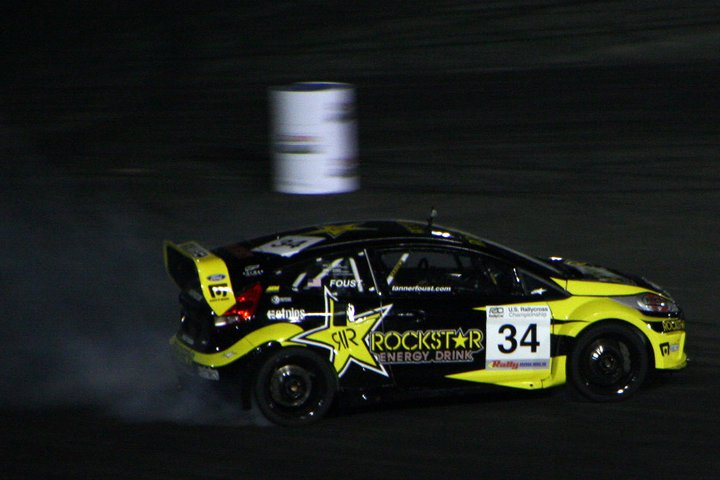
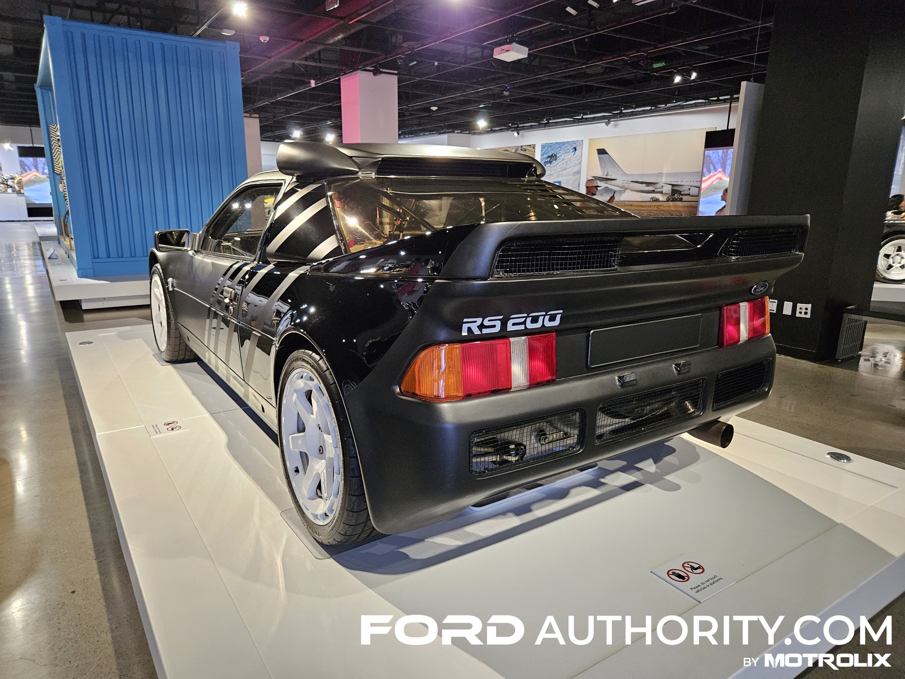
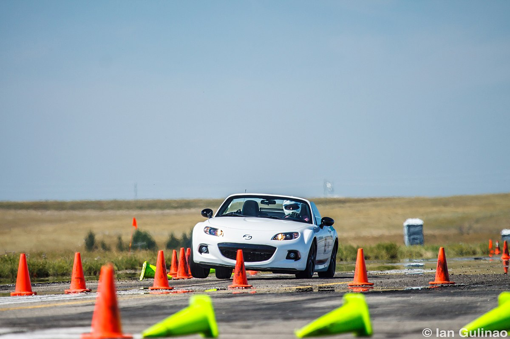
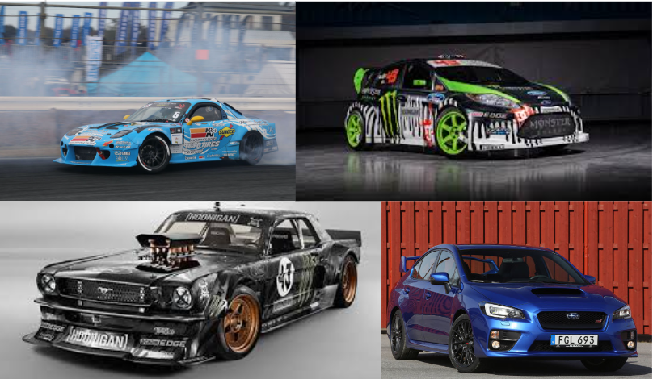

Définition du gymkhana automobile

Le gymkhana automobile est une discipline sportive qui consiste à réaliser
un parcours chronométré composé de virages serrés, de slaloms, de demi-
tours et d’obstacles techniques. Le but n’est pas seulement d’aller vite, mais
surtout de démontrer la précision, la maîtrise et l’agilité du conducteur au
volant de sa voiture. C’est une épreuve qui met à l’épreuve la technique de
pilotage bien plus que la vitesse pure.
Introduction à l’histoire

Le gymkhana automobile possède une histoire riche et intéressante,
marquée par son évolution depuis des formes anciennes de compétitions
d’adresse jusqu’à la version moderne que l’on connaît aujourd’hui. Son
développement à travers différents pays a contribué à en faire une
discipline unique. L’histoire complète de cette pratique sera détaillée plus
loin.
Le déroulement d’une épreuve

Lors d’une compétition de gymkhana automobile, les participants doivent effectuer un
parcours défini à l’avance, souvent tracé avec des cônes ou des barrières. Le pilote doit
suivre un ordre précis de manœuvres : virages à 180° ou 360°, stationnements
contrôlés, ou glissades calculées. Chaque erreur de trajectoire ou contact avec un cône
entraîne une pénalité de temps, ce qui rend la concentration et la mémoire du tracé
essentielles.
Les voitures utilisées

Dans le gymkhana, presque tout type de voiture peut être utilisé, à condition qu’elle
soit bien contrôlable et suffisamment puissante pour effectuer des manœuvres rapides.
Beaucoup de pilotes préfèrent des voitures légères, à propulsion ou à transmission
intégrale, comme les Subaru WRX STI, Ford Fiesta ST, ou Mazda RX-7. Ces voitures
sont souvent modifiées pour améliorer la maniabilité, le freinage et l’accélération.
Les compétences du pilote

Le gymkhana met principalement en avant la maîtrise du véhicule, la coordination et le
timing. Le pilote doit savoir doser l’accélération, le freinage et le contre-braquage pour
maintenir la trajectoire idéale sans perdre de temps. Cela demande beaucoup
d’entraînement et une excellente connaissance de sa voiture. Plus que dans n’importe
quelle autre discipline automobile, le pilote doit anticiper chaque mouvement avec
précision.
Une discipline spectaculaire et formatrice

En plus d’être impressionnant à regarder, le gymkhana automobile est une excellente
école de conduite. Il aide les conducteurs à mieux comprendre les réactions de leur
voiture et à développer des réflexes de pilotage. C’est aussi un sport accessible, car il
peut se pratiquer sur des parkings ou circuits fermés avec un coût relativement faible.
Aujourd’hui, cette discipline continue de séduire les amateurs de drift, de rallye et de
conduite de précision partout dans le monde.